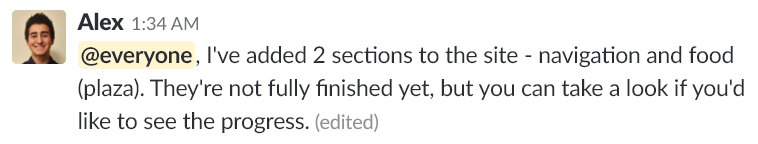
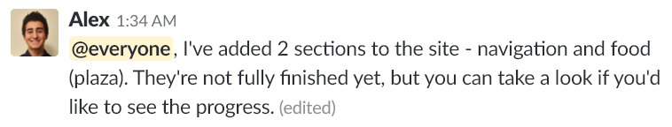
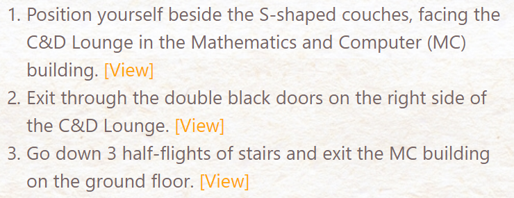
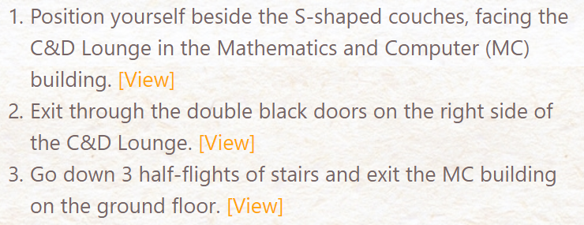
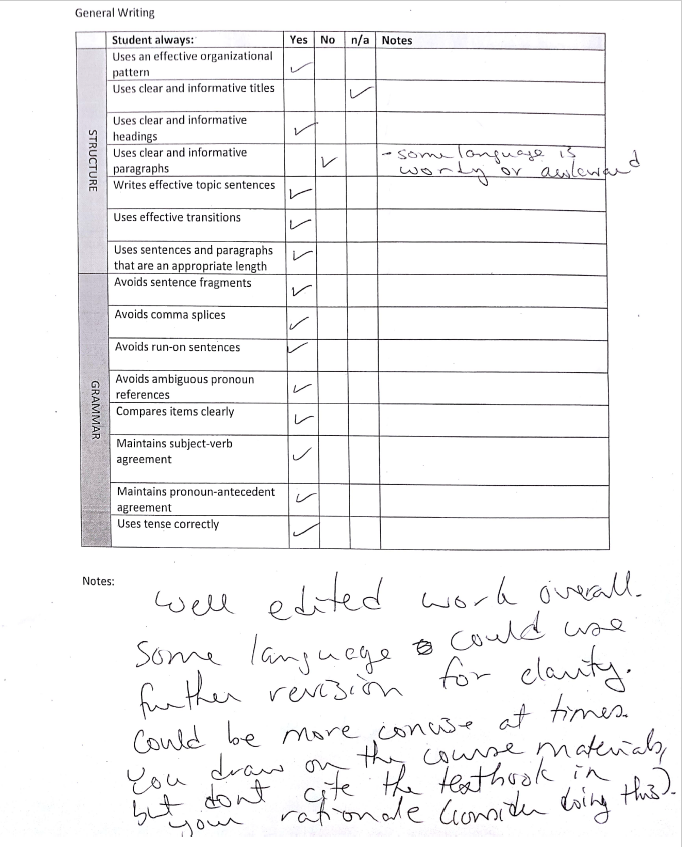
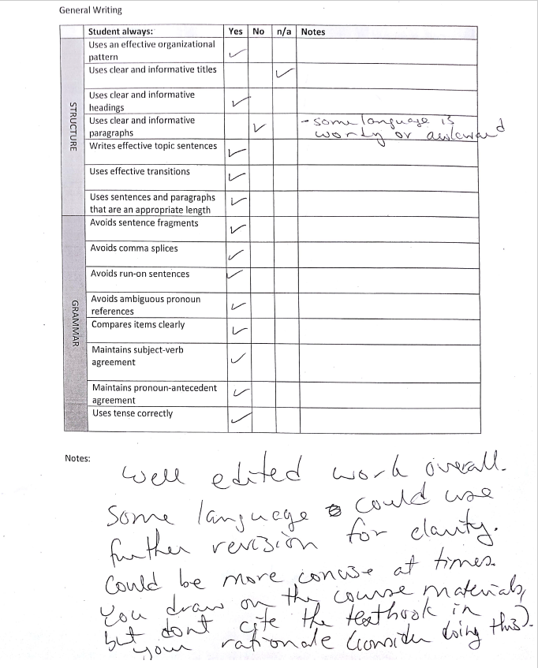

Chapter 9: Writing Correspondence
This section includes screenshots and analysis of team correspondence.
With busy schedules often interfering with one another, it was difficult for the Orange Draft group to meet in-person and
communicate face-to-face. As a result, the majority of team-wide communication took place through the Slack
group – where the team planned deliverables, set deadlines, allocated tasks, and relayed progress updates.
Slack: cloud-based instant-messaging service for team collaboration.
In Slack, workspaces are comprised of multiple channels with different purposes and topics – allowing for different correspondence
formalities to coexist in the same communication platform. For example, the #general channel was reserved
for general work-related communication and often exhibited moderately formal correspondence. In contrast,
the #random channel was reserved for non work-related communication and exhibited informal correspondence.
To present myself effectively in correspondence, I strived to follow the five correspondence suggestions from Practical Strategies
for Technical Communication.
- Use the appropriate level of formality
- Communicate correctly
- Project the “you” attitude
- Avoid correspondence clichés
- Communicate honestly
-
Appropriate Level of Formality
|
To use an appropriate level of formality, I ensured that all messages matched the formality of the channel in which they
were sent. Messages sent through direct messages or the #random channel typically
featured informal language with slang, emojis, incomplete sentences, and abbreviations.
Messages sent through the #general channel featured a moderately informal tone using
complete and complex sentences with minimal abbreviations. Correct communication
was only applicable to moderately formal correspondence, where communication was
typically grammar and spelling -mistake free.
|
-
Project the “You” Attitude
 

|
|
To project the “you” attitude, I conveyed a courteous and positive tone in all correspondence. I refrained from explicitly
blaming others, and ensured that I always included a compliment when critiquing the
work of others. I took into consideration and ensured that my correspondence met
the interests and needs of all teammates. My communication in the #general channel
was to the point, result driven and proactive.
|
-
Communicate Honestly
|
It was important that I communicated honestly with teammates. I ensured to accept and own up to mistakes
when they occurred, as well as set reasonable deadlines and reported on my progress
accurately.
|


 


 
